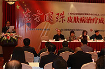
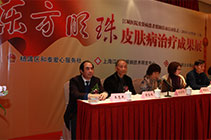
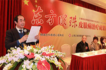

一份耕耘一分收获，正是数十年如一日的细心和专注，让顾昌林教授发掘了别人所未发现的瑰宝。他在牛皮癣治疗方面的努力见到了成果，独创的"DFMZ308－牛皮癣中医活化疗法"在治疗牛皮癣受到了国际认可，并因此获得了国家科技进步二等奖。多家媒体对顾昌林教授进行了报道。腾讯网，新浪网，上海电视台太多权威的媒体，对顾教授进行专访，生性淡泊名利的顾教授并不喜欢曝露在镁光灯下，但是当听说他的讲解能够让患有牛皮癣的患者少走弯路，生活习惯有所改变，早日恢复健康，顾教授欣然接受了媒体的采访，和牛皮癣患者分享心得。
发布会现场
皮肤病专场发布会
我院院长讲话